עיינות צוקים
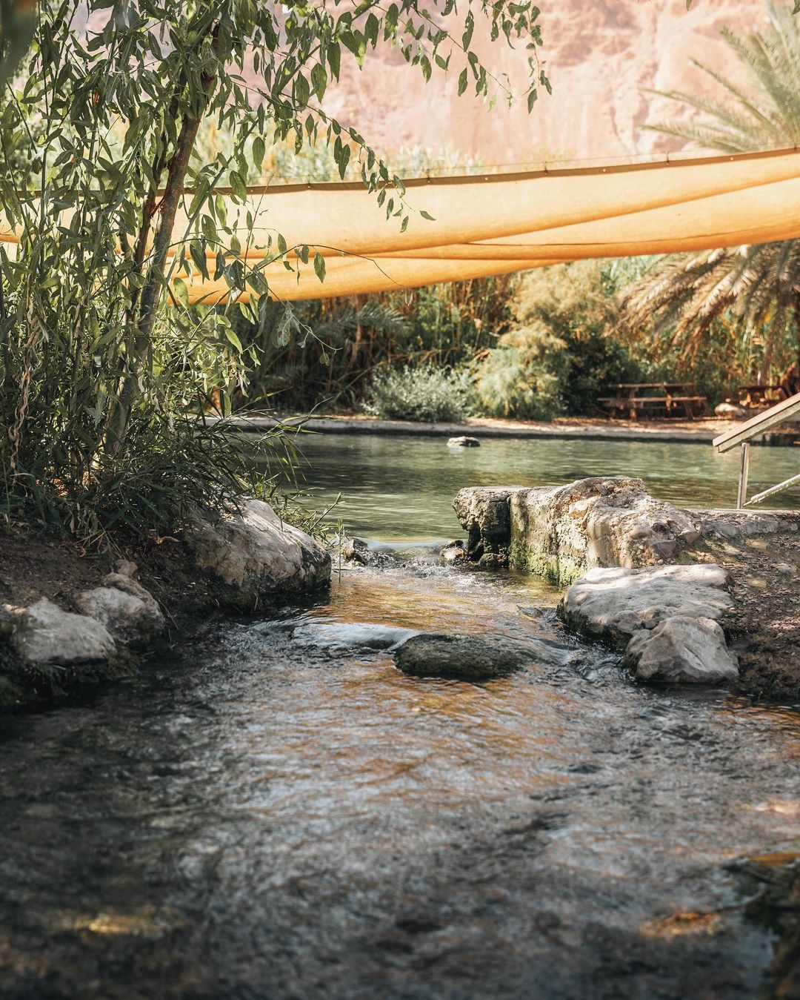.jpg)
.jpg)
📍איך מגיעים?
לאורך החוף הצפון-מערבי של ים המלח, 🧂
לאיזור זה מגיעים מים מתוקים שחלחלו להרים שצמודים לים המלח וכעבור שנים נובעים בעין פשחה מסוננים מרוב המלחים ,המים מתוקים יחסית למי ים המלח, אך עדיין מלוחים מכדי לשמש לשתייה.💧
השמורה מחולקת ל3 חלקים שאחד מהם זו השמורה הסגורה שאליה ניתן להיכנס רק עם מדריך. ❌
איך מגיעים? 📍
בויז: ״עיינות צוקים״ ״עין פשחה״
במידה ואצם רוצים להגיע גן ללגונה הסודית תתקשרו למספר הבא לתיאום
02-9942355
הערות חשובות ⭐ :
המים בעין פשחה הם מים שנשאבים מאחת מתוך 3 בריכות נביעה באיזור
במקום לגונה סגורה לא ניתן להגיע ללא מדריך מוסמך שמכיר את הדרך וידע להדריך אתכם
המקום הוא שמורה מוכרזת ולכן לשמור על הכללים של שמורות
הבולען במצוקי דרגות
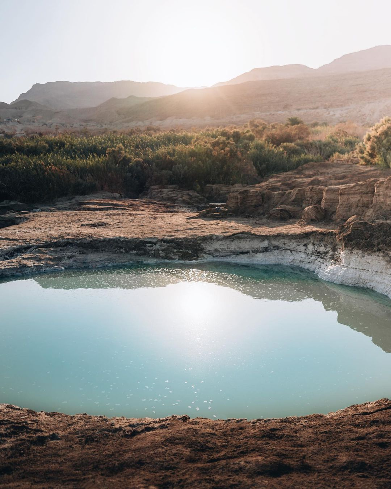 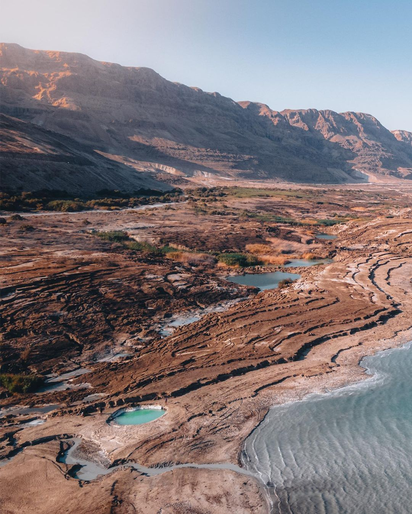 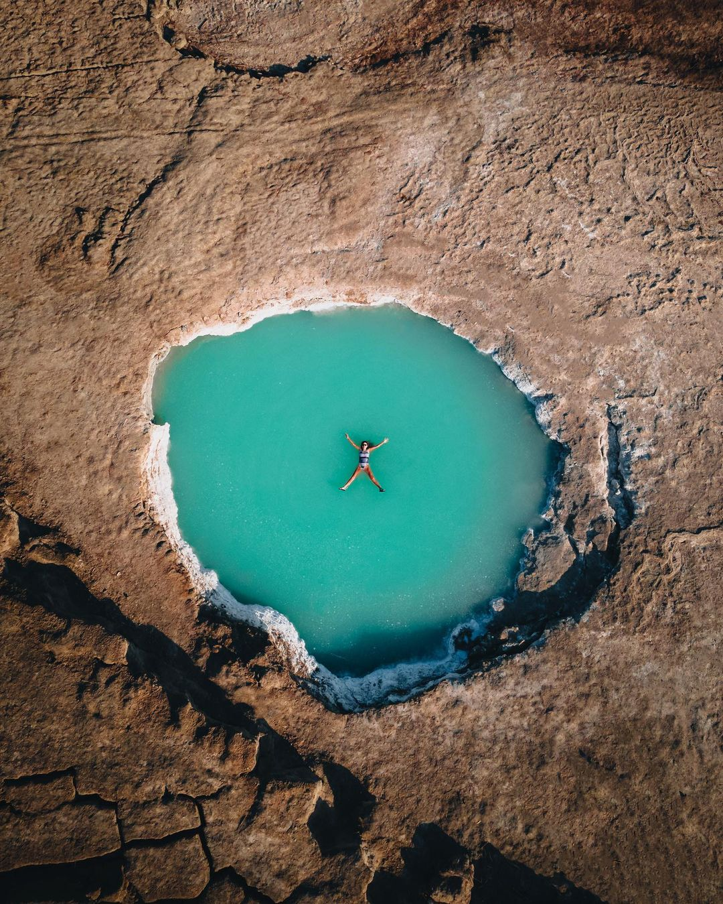📍איך מגיעים?
בויז: ״מעבר מצוקי דרגות״ כ100 מטר דרומית למחסום יש חניית עפר, תחנו שם ותרדו ברגל על הכביש עפר עד ים המלח, תעכבו אחרי הסימוני רכבים
הערות חשובות ⭐ :
הצבע של המים מתקבל כתוצאה מהאצות שקיימות במים וגורמות לצבע המיוחד 🔵
במקום אין פחים, בבקשה לאסוף אחריכם את כל הלכלוך 🗑
ההליכה באיזור הינה מעט מסוכנת למי שלא מכיר, בבקשה לעקוב רק אחרי הסימונים של הרכבים 🚙
עין פרת
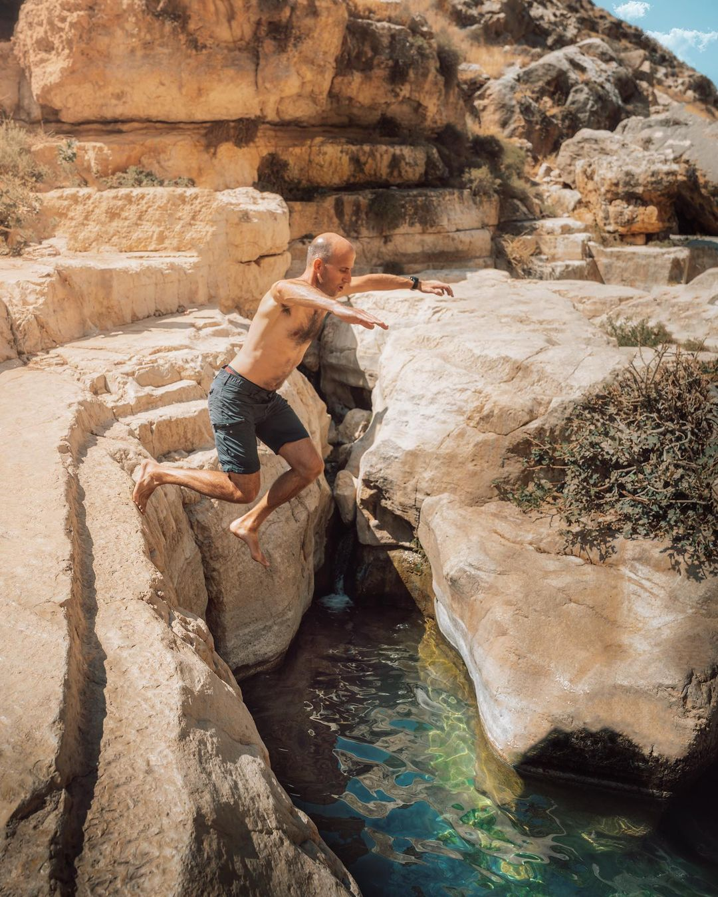 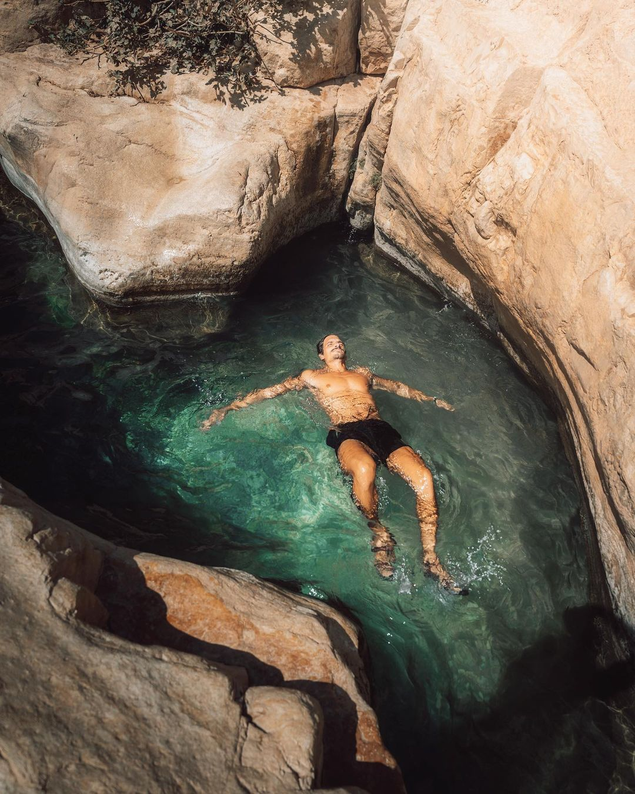 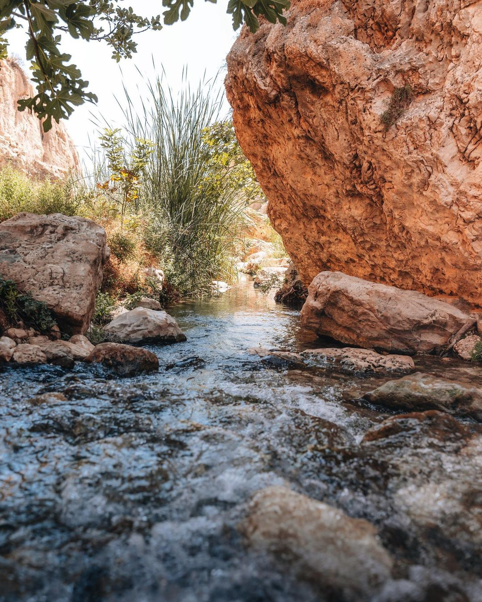📍איך מגיעים?
בויז: עין פרת (עין פארה)
הערות חשובות ⭐ :
המקום הינו שמורת טבע ולכן יש עלות סמלית בכניסה אך חשוב מכל אין להדליק אש בשטח השמורה 🔥
במקום יש את מנזר פארן שקים משנת 330 לספירה, ניתן להיכנס בתיאום מראש 🛕
בתוך איזור זה של נחל פרת יש המון נקודות מעניינות בטווח קצר , אל תעצרו רק במקום אחד 😉
צאו לטייל וכמובן אם תשכחו להשאיר נקי 🚯
פטריות ים המלח
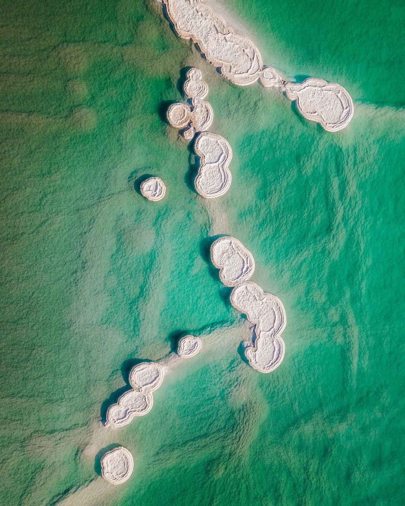 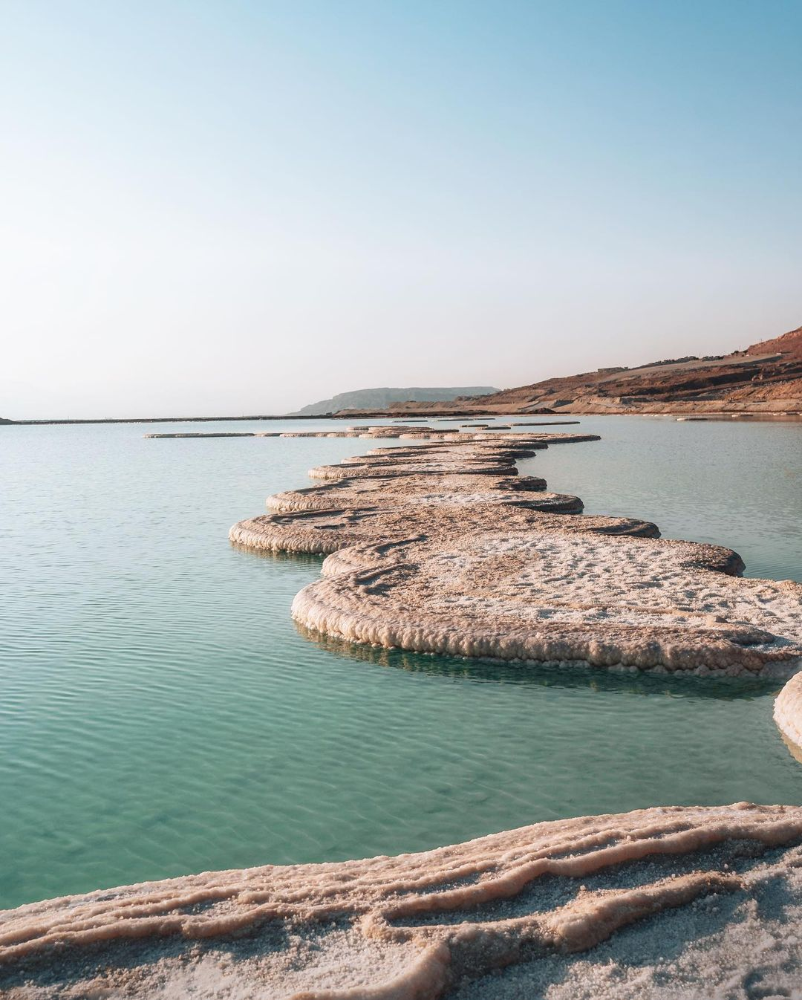 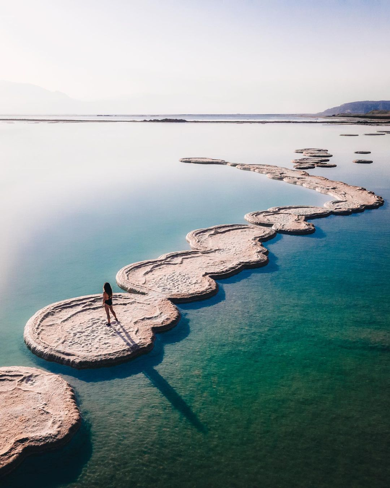📍איך מגיעים?
איזור הפטריות הממוקם מול מלון ישרוטל סגור עד להודעה חדשה. נכון לימים אלה הוא משמש מתחם עבודה סגור לכניסת אזרחים והכניסה עלולה לגרור
קנס של הסגת גבול. כל כניסת מטייל תהיה על אחריותו הבלעדית לביטחונו ולביטחון משפחתו/חבריו״ ❌
למי שבכל זאת רוצה להגיע?📍
בויז: ״פטריות ים המלח״ מגיעים לנקודה
ומתחילים לרדת מהחניה ישירות לכיוון ים המלח , שם כבר לא תפספסו. (לכל הכוונה. וספת מוזמנים לשלוח הודעה) 🙏🏻
הערות חשובות ⭐ :
האתר סגור על פי המועצה לכן זה על אחריותכם השהות שם ❎
אין במקום פחים או צל, אם אתם מגיעים אז להגיע ערוכים 🚶♀️
מומלץ להיכנס שם למים עם סנדלים ולא יחפים 🩴
שביל המלח
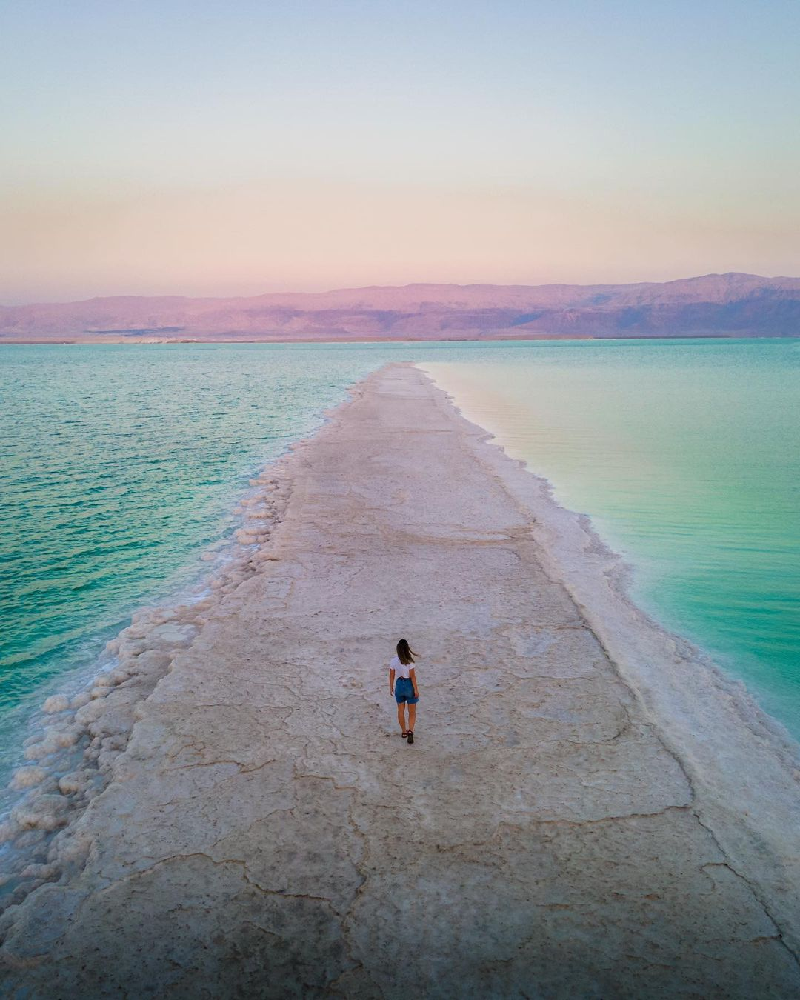 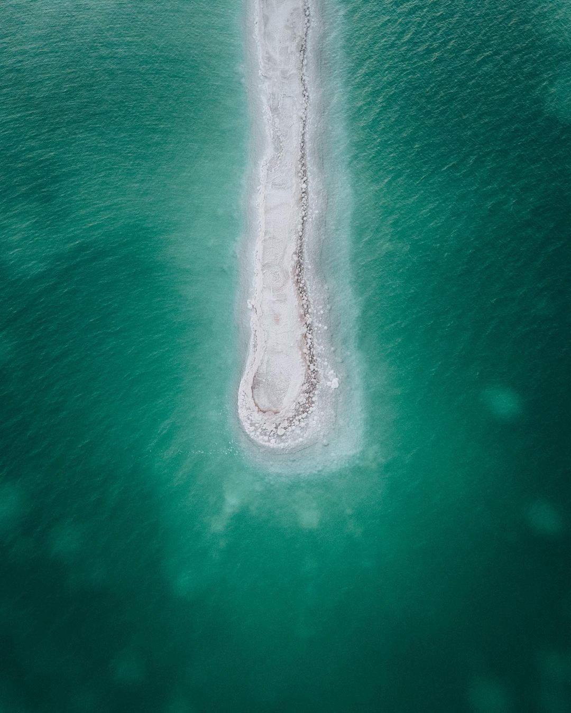 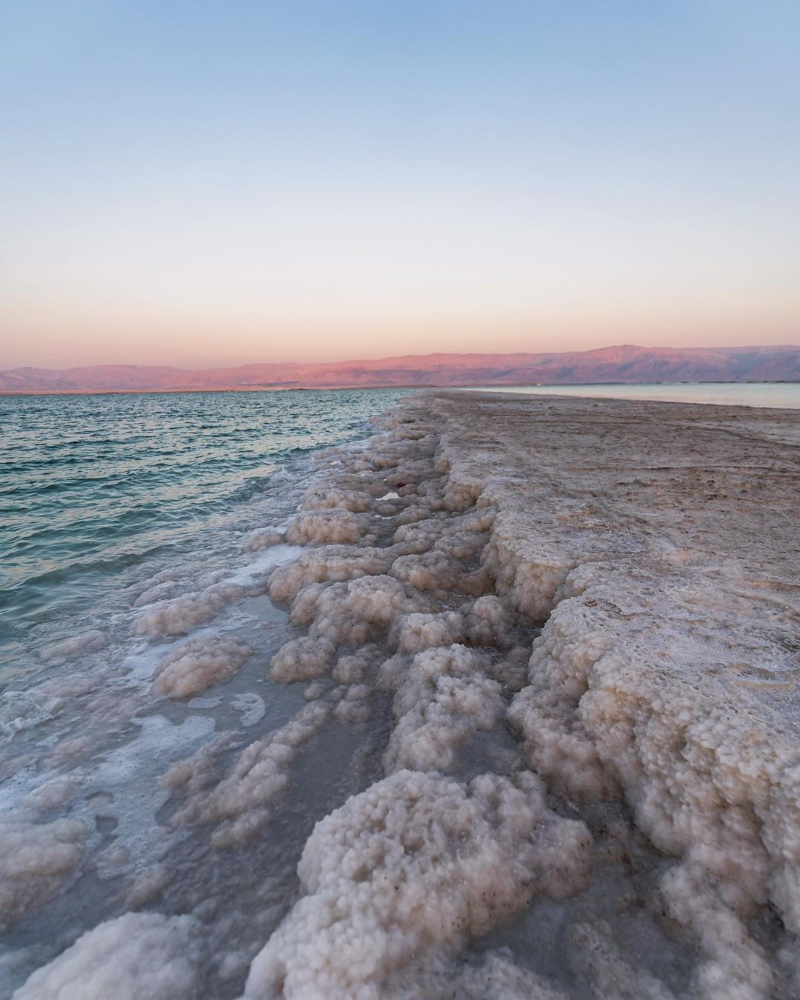📍איך מגיעים?
בויז: ״שביל המלח על החוף המוסדר״
הערות חשובות ⭐ :
מומלץ להגיע בשקיעה /זריחה כי אז המים והשמיים
מקבלים צבעים מטורפים שמעצימים את החוויה בכמה וכמה רמות 🌅
השביל רחב וניתן להגיע ולטייל עליו אך אין שם פחים בבקשה לשמור נקי!
צמוד לשביל המלח יש איזור שניתן לפתוח
בו אוהלים לכל מי שרוצה לעשות קאמפינג ולא לישון במלונות🏕